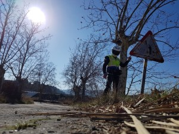

Denuncia el estado de las carreteras
No se conforme… DENUNCIE.
¿Quiere denunciarnos el mal estado de la carretera? se lo ponemos muy fácil.

Puede usted colaborar con nosotros presentándonos su denuncia sobre el mal estado de una carretera que pone en peligro la seguridad de los ciudadanos.
Forma de formular la denuncia:
- Realizar dos fotografías panorámicas en el sentido de la marcha desde dos ángulos distintos.
- Realizar dos o más fotografías de detalle de la zona que considera de riesgo o infracción.
- Localizará el nombre de la calle o vía concreta donde se ubica la situación de riesgo o ilegal.
- Remitirá correo electrónico al departamento de seguridad vial y lo hará mediante el mail denuncia@seguridadmotociclistas.org
- Adjuntará al correo electrónico los archivos capturados (salvo que sean videos).
- Realizará una descripción de los hechos y circunstancias de riesgo o ilegalidad que considera, indicando debidamente la fecha de observación de la incidencia.
- Indicará en el correo electrónico los siguientes datos: Nombre, apellidos, número de socio (si procede), localización completa y concreta de la incidencia: Lugar (carretera y kilómetro, calle y número, provincia). Si se adjuntan las coordenadas del dispositivo GPS solo se considerará refuerzo a la información facilitada. Los datos personales son confidenciales.
En el caso que se cumpla debidamente el protocolo de denuncia, el departamento de seguridad vial informará si abre expediente y la referencia del mismo y si necesita más información para gestionarlo.
Envíe una incidencia por cada correo electrónico.
En el caso que la captura de las imágenes fuera en formato de video:
El video debe de ser de buena calidad, presentando buena definición y estabilidad de imagen y siempre en el sentido de la marcha y a baja velocidad de circulación si fuera del tipo onboard.
Se remitirá al departamento vía WeTransfer y no por otro medio y no podrá tener un tamaño superior a 2Gb. E-Mail: denuncia@seguridadmotociclistas.org
Aspectos para tener en consideración:
- El departamento recepcionará las denuncias en el correo electrónico concreto para ello y no en otros correos electrónicos: denuncia@seguridadmotociclistas.org
- La denuncia recibida debe estar debidamente cumplimentada atendiendo al protocolo, de lo contrario se considerará nula y no se evaluará.
- Si la denuncia no trae las imágenes adjuntas como archivos independientes adjuntos y vienen integradas en texto, se considerará nula y no se evaluará.
- Si la denuncia se ampara en imágenes de Google u otras no adquiridas directamente por el denunciante se considerará nula y no se evaluará.
- El departamento de seguridad vial evaluará jurídicamente la posible infracción.
- El departamento de seguridad vial evaluará el riesgo vial y establecerá la prioridad de su gestión en base a este principio.
- En las denuncias formales a la administración pública no costará como denunciante el ciudadano denunciante, costará el departamento de seguridad vial de IMU quién asumirá las responsabilidades. Por tanto, las denuncias serán confidenciales salvo decisión expresa del denunciante al departamento.
El modelo de priorización.
Los técnicos del departamento de seguridad vial, tras recibir la denuncia ciudadana y comprobar que se ajusta a las anteriores condiciones, procederán a evaluar la misma en base a criterios de riesgo y legalidad vigente.
Esta evaluación se realizará en base a la siguiente priorización:
- Riesgo para la vida e integridad de las personas.
- Posibilidad de gestión operativa del equipo de seguridad vial (que no esté ejerciendo actividad en otro servicio prioritario).
- Denuncia formulada por socio de pleno derecho de IMU.
- Denuncia formulada por un NO socio de IMU.
- Infracción al marco legal.
- Infracción al marco técnico.
Recordamos que Unión Internacional para la Defensa de los Motociclistas (IMU) es un modelo de herramienta social integrada por ciudadanos y que tiene por principales objetivos la consumación de los derechos individuales y colectivos asociados a la movilidad de motociclistas.
- Para consultas y requerimientos: seguridadvial@seguridadmotociclistas.org
- Teléfono de contacto: 605806676 (Atención de 10 a 12 horas) (Atención socios de 10 a 18 horas)
Protocolo para denuncia:Documento NI_2021_01 Protocolo para denuncias
Gracias por ayudarnos a tener carreteras más seguras.
Algunas denuncias: